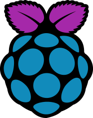
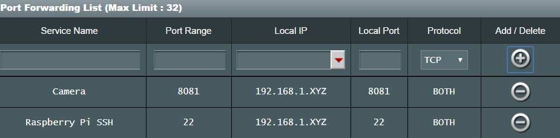

Basic Information
-  Next: Setting Up RF Devices
-
 Previous: Download the Files
Previous: Download the Files
- Basic Information
hostname -I
Step 2. Setup port-forwarding. To do this, you must go to the Port Forwarding section of your router. From there, forward port 22 (for SSH) for the Raspberry Pi IP address. You will also need to forward a port for the live camera feed (8081). Note: if you are going to be using multiple Raspberry Pis, please see the image on the Multiple Cameras page under the Further customization section instead.

Step 3. Open up the input_variables.txt file and update the prompts based upon your activity in Steps 1 and 2. Next, assign a username and password to be used to login to the live video feed, the number of degrees required to rotate the live feed correctly, and the name of your camera. Lastly, identify the full path of your python interpreter. You can determine this by typing
which pythonin the command-line. If you would like to use a different version of python, you may specify that.
Step 4. At the current moment, you will only be able to connect via your smart phone if you are connected to the same Wifi network as your Raspberry Pi. To connect remotely, you have 2 options:
1) Create a domain name via the Dynamic Domain Name System (DDNS) service offered by your router (not all routers can do this), or
2) Download Duck DNS (see Required Software section), which is software which will periodically check your IP address and re-register it to your assigned domain name if it changes. On the Duck DNS website, make sure to click on 'pi' as the operating system in order to get easy, step-by-step instructions on how to set everything up.
Enter your domain name into the input_variables.txt file. For example: domain_name mysecretedomain.duckdns.org
Step 5. Insync-portable is used to upload image and video files to Google Drive. There is a free 15-day trial, after which time there is a one time cost of $30. Once downloaded, you can extract the files and use an SFTP client (also Port 22) like WinSCP to transfer the inysnc-portable folder to your /home/pi/Desktop/ directory (it must be placed here). With SSH,
cd /home/pi/Desktop/insync-portableand run
./insync-portable help add_accountfor instructions on how to do so. The command you enter should be (sudo needed):
sudo ./insync-portable add_account -a AUTH_CODE -p /home/pi/insync_email@gmail.comIn addition, enter your insync email address into the input_variables.txt file.
Step 6. Determine whether or not you want to use Pushbullet notifications (see Software Required), text notifications, and/or email notifications for alerts by entering True/False into the input_variables.txt file. Click here if you want to setup the ability to send texts and/or emails (as the mail command is used for both).
Step 7. Ensure that the crontab file automate_tasks.txt is run on startup, which is a file that automates various commands necessary for the security system. To do this:
cd /home/pi
nano .bashrcadd:
crontab /home/pi/Desktop/automate_tasks.txtto the .bashrc file, then
ctrl + o (to save)
ctrl + x (to exit)
Step 8. Every time that changes are made to any of the files, the system must be restarted via
sudo python /home/pi/Desktop/reboot.py
Note: I have found that I had to replace the 433Mhz receiver every 6 months due to reliability issues, although previously replaced receivers will then work again (they seem to temporarily burn out). I also find myself changing the batteries on the door sensors around every 6 months. If anyone has a better solution, please let me know (see Contact section)!